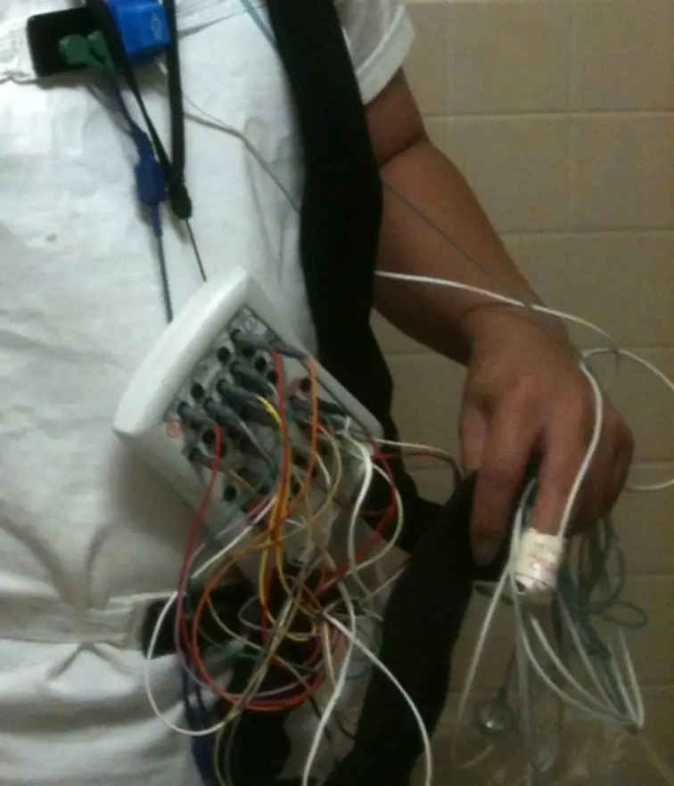

DX.1 — Insomnie (primaire ou comorbide)
1. Définition
L'insomnie est une difficulté à s'endormir, à rester endormi ou à dormir assez tard, malgré une occasion de dormir adéquate, avec un retentissement diurne1. Elle devient chronique quand la plainte survient au moins trois nuits par semaine depuis trois mois1. Elle est primaire si aucune cause ne l'explique. Elle est comorbide si une maladie, un médicament ou un autre trouble du sommeil l'accompagne1. Ce terme remplace l'ancien terme « secondaire », car l'insomnie comorbide se traite aussi pour elle-même1.
2. Épidémiologie (Suisse, puis Europe)
Les symptômes d'insomnie touchent 32,0 % des adultes de 40 à 82 ans à Lausanne (HypnoLaus)2. Cette cohorte retient une latence d'endormissement de plus de 30 minutes ou des réveils nocturnes ou précoces, au moins trois nuits par semaine pendant le dernier mois, ou un usage régulier d'hypnotiques2. Selon l'OFS, un tiers de la population suisse est touché par des troubles du sommeil3. En Europe, l'insomnie sur 12 mois atteint 7,0 % des personnes de 18 ans et plus4. Ces écarts tiennent aux définitions et aux populations étudiées.
Dans HypnoLaus, l'âge élevé, le sexe féminin, une formation plus courte et la dyslipidémie s'associent de façon indépendante aux symptômes d'insomnie2. L'alcool en excès, la dépression, l'anxiété, les psychotropes et la somnolence diurne s'y associent aussi2. Le tabagisme actuel y est au contraire moins fréquent2.
| Affection ou mesure (unité) | Fréquence rapportée | Population et lieu | Source |
|---|---|---|---|
| Symptômes d'insomnie (en %) | 32,0 | 40–82 ans, Lausanne, 2009–2013, n = 3947, 52 % de femmes | 2 |
| Usage régulier d'hypnotiques (en %) | 4,2 | même cohorte | 2 |
| Troubles du sommeil (fraction de la population) | un tiers | population suisse, enquête 1997–2022 | 3 |
| Insomnie sur 12 mois (en %) | 7,0 | 18 ans et plus, Europe, 2011 | 4 |
| COMISA, insomnie et SAOS associés (en %) | 11,4 | HypnoLaus, n = 1999, Suisse, 2025 | 5 |
3. Physiopathologie
Le modèle dominant est l'hyperéveil : le cerveau reste trop activé pour dormir. Trois groupes de facteurs interviennent : prédisposants, précipitants et d'entretien (modèle des trois P)Facteurs prédisposants : tempérament anxieux, âge, sexe féminin. Facteurs précipitants : stress, maladie, deuil, changement d'horaire. Facteurs d'entretien : siestes, temps passé au lit, inquiétude sur le sommeil, associations lit-éveil. Les facteurs d'entretien expliquent la chronicité et se traitent par la TCC-I.1.
Cascade, de la cause au signe.
• Amorce (moléculaire). Un stress active l'axe de la réponse au stress et le système de l'orexine, qui maintient l'éveil. Le récepteur GABA-ACe récepteur est un canal chlorure inhibiteur du SNC. Son activation freine les neurones et favorise le sommeil. Les benzodiazépines et le zolpidem l'activent.6 freine moins les réseaux d'éveil.
• Développement (cellulaire). Les réseaux d'éveil restent actifs la nuit. L'EEG montre plus d'activité rapide, bêta et gamma, chez les insomniaques2.
• Installation (tissulaire et clinique). La latence d'endormissement s'allonge, les réveils nocturnes se multiplient et l'efficacité du sommeil baisse. Ces écarts restent petits à la polysomnographie2. La fatigue diurne s'installe.
• Maintien. L'inquiétude, les siestes et le temps excessif au lit conditionnent le lit à l'éveil. Un cercle vicieux se forme, même après la disparition de la cause initiale.
Le tableau suivant relie chaque perturbation à l'examen qui la montre et au traitement qui la corrige.
| Perturbation | Exploration qui la montre | Thérapeutique qui la corrige (mécanisme) |
|---|---|---|
| Hyperéveil cognitif et somatique | Agenda du sommeil, ISIQuestionnaire de sévérité de l'insomnie, rempli par le patient en quelques minutes. Il mesure le retentissement et suit l'effet du traitement.1 | TCC-I : déconditionne l'éveil au lit |
| Suractivité du système orexine | EEG de polysomnographie (activité rapide) | QUVIVIQ® : bloque OX1 et OX2 et réduit l'éveil8 |
| Déficit de signal inhibiteur GABA | Aucun examen spécifique | STILNOX® et DORMICUM® : renforcent GABA-A, à court terme6,9 |
| Rythme sécrétoire de la mélatonine affaibli avec l'âge | Anamnèse, âge de 55 ans ou plus1 | CIRCADIN® : substitue le signal de la mélatonine7 |
| Cause comorbide (apnée, douleur, humeur, jambes sans repos) | Anamnèse, polysomnographie si doute | Traiter la comorbidité en parallèle (DX.2 à DX.7)1 |
4. Démarche diagnostique
Le médecin écarte d'abord ce qui menace la vie ou la sécurité, puis cherche une cause comorbide, puis pose le diagnostic d'insomnie. Il distingue l'insomnie de la restriction volontaire du sommeil, du retard de phase circadien (DX.9), des jambes sans repos (DX.7) et des apnées du sommeil (DX.2)1.
Étape 1 — Chercher les drapeaux rouges. Chaque drapeau est cliquable : sa fenêtre dit pourquoi il est rouge.
| Drapeau rouge | Diagnostic à craindre | Signe ou examen qui tranche et piège |
|---|---|---|
| 🚩 Idées suicidairesL'insomnie multiplie le risque de passage à l'acte dans la dépression. Une idée suicidaire exige une évaluation psychiatrique urgente et la sécurité du patient.1 | Dépression (DX.4)1 | Question directe sur la mort et le suicide. Piège : ne pas prescrire un hypnotique sans évaluer ce risque. |
| 🚩 Pauses respiratoires observées, ronflement, somnolence au volantUne apnée obstructive fragmente le sommeil et menace la conduite. Les hypnotiques aggravent l'apnée : l'AIPS les contre-indique.6,9 | SAOS (DX.2)6 | Polygraphie ou polysomnographie. Piège : l'apnée se présente aussi comme une insomnie de maintien5. |
| 🚩 Cataplexie, paralysie du sommeil, endormissements brusquesUne perte soudaine du tonus à l'émotion évoque la narcolepsie. L'AIPS de QUVIVIQ® contre-indique le daridorexant dans la narcolepsie.8 | Narcolepsie (DX.12)8 | Avis spécialisé et polysomnographie. Piège : la somnolence diurne seule ne suffit pas. |
| 🚩 Gestes violents ou cris pendant le sommeilUn comportement qui joue les rêves évoque un trouble comportemental en sommeil paradoxal. Il peut précéder une maladie neurodégénérative.1 | Trouble du sommeil paradoxal (DX.13), parasomnie (DX.10)1 | Polysomnographie. Piège : prendre ces épisodes pour des cauchemars. |
| 🚩 Sevrage d'alcool ou de sédatifUn sevrage entraîne insomnie, tremblements et, dans les cas graves, convulsions. L'AIPS décrit un syndrome de sevrage à l'arrêt brusque.6,9 | DX.6 et DX.86 | Anamnèse de consommation et de médicaments. Piège : l'insomnie est le premier signe. |
Étape 2 — Sans drapeau rouge. Le médecin suit cinq étapes graduelles.
• Il caractérise le trouble : endormissement, maintien ou réveil précoce, durée de plus de trois mois.
• Il fait tenir un agenda du sommeil de 7 à 14 jours et remplir un questionnaire1.
• Il recherche une cause comorbide : humeur, anxiété, douleur, apnée, jambes sans repos, rythme circadien, substances (point 5).
• Il examine le patient (point 6) et demande les examens ciblés (point 9).
• Il pose le diagnostic d'insomnie et choisit la prise en charge (point 10).
5. Anamnèse ciblée et drapeaux rouges
Le médecin laisse le patient décrire sa nuit, puis il caractérise la plainte : type de trouble, horaire, fréquence, durée, facteurs et retentissement diurne1. Il interroge aussi le partenaire de lit, car lui seul voit le ronflement, les pauses respiratoires, les mouvements des jambes et les comportements étranges1. Il pose enfin les questions fermées qui changent la décision.
Les drapeaux rouges actionnables sont les idées suicidaires, la somnolence au volant, la cataplexie, la violence pendant le sommeil et le sevrage d'alcool. Chacun impose une évaluation urgente ou un avis spécialisé (point 4).
6. Examen physique ciblé, région par région
L'examen est le plus souvent normal dans l'insomnie primaire. Le guide européen le recommande quand une comorbidité est suspectée, afin d'exclure une maladie qui exige un traitement propre1. Le médecin décrit le normal, puis le pathologique, dans l'ordre topo-systémique : état général et mensurations ; voies aériennes supérieures ; cou et thyroïde. Il poursuit par l'appareil cardiovasculaire, l'examen neurologique et les jambes, puis l'état psychique.
7. Approche syndromique
Quatre syndromes se partagent la consultation. Chacun d'eux contient des signes fonctionnels et des signes physiques.
| Syndrome | Signes fonctionnels (définition) | Signes physiques (geste de recherche) | Mécanisme |
|---|---|---|---|
| 7.1 Insomnie d'endormissement | Latence longueLe patient met un long moment à s'endormir. Le médecin demande le temps habituel avant le sommeil, relevé dans l'agenda.1 | Agitation au coucherLe médecin observe, à l'hospitalisation, le patient tendu ou agité le soir. Normal : repos calme. | Hyperéveil cognitif ou retard de phase |
| 7.2 Insomnie de maintien et réveil précoce1 | Réveils nocturnesLe patient se réveille plusieurs fois et se rendort mal. Le médecin demande le nombre et la durée des réveils. | Fatigue diurneLe médecin observe bâillements et ralentissement. Un score d'Epworth élevé objective la somnolence. | Fragmentation du sommeil, dépression, apnée, douleur |
| 7.3 Insomnie comorbide à un SAOS (COMISA)1 | Ronflement et pausesLe conjoint décrit un ronflement et des pauses respiratoires. Le médecin interroge le partenaire. | Cou large, HTALe médecin mesure la tension et l'IMC. Un IMC élevé augmente la probabilité d'apnée. | Obstruction nocturne et micro-éveils |
| 7.4 Insomnie liée à une substance ou à un médicament1 | Prise tardive de caféine, alcool, sevrageLe patient décrit ses consommations du soir. Le médecin liste les médicaments et leurs horaires. | Tremblement, tachycardieLe médecin cherche des signes de stimulation ou de sevrage. | Stimulation ou rebond après arrêt |
8. Diagnostic positif et critères
Le diagnostic d'insomnie chronique est clinique. Les critères viennent de l'ICSD-3 (AASM, 2014) et du DSM-5 (APA, 2013), repris par la ligne directrice européenne 2023 et l'AIPS de QUVIVIQ®1,8.
| Élément | Critère |
|---|---|
| Plainte | Difficulté d'endormissement, de maintien du sommeil ou réveil trop précoce. |
| Occasion de dormir | Le temps et les conditions de sommeil sont adéquats. |
| Retentissement diurne | Fatigue, trouble de l'attention, irritabilité ou baisse de performance. |
| Fréquence et durée | Au moins trois nuits par semaine pendant au moins trois mois. |
| Exclusions | Le trouble ne s'explique pas mieux par un autre trouble du sommeil, un médicament ou une substance. |
Ce qui ne suffit pas : une seule mauvaise nuit, un sommeil court sans retentissement, un résultat de polysomnographie isolé. La polysomnographie n'est pas nécessaire au diagnostic ; elle sert à chercher un autre trouble du sommeil1.
9. Examens complémentaires
9.a Gold standard
Aucun examen biologique ne peut servir de référence. La référence est clinique : l'entretien, complété par l'agenda du sommeil et les questionnaires1.
9.b Première intention
Le médecin fait tenir un agenda du sommeil et remplir l'index de sévérité de l'insomnie (ISI). Il mesure la somnolence et dépiste l'apnée par des questionnaires de somnolence et d'apnée. Il ne demande un bilan sanguin que si l'anamnèse ou l'examen l'indique1.
9.c Alternatives
L'actigraphie complète l'agenda quand un rythme irrégulier ou des mouvements périodiques des jambes sont suspectés1. Chez le patient âgé ou dément, le médecin associe le soignant à l'anamnèse1.
9.d Deuxième intention
La polysomnographie recherche un autre trouble du sommeil ou explore une insomnie résistante1.
Cas de figure. Positif : un trouble confirmé mène à la conduite du point 11. Négatif : l'absence d'anomalie n'exclut pas l'insomnie, qui reste clinique. Limite : un indice isolé se contrôle quelques semaines plus tard. Discordant : une plainte intense avec une polysomnographie normale évoque une perception erronée du sommeilLe patient sous-estime son sommeil réel. Le diagnostic reste clinique et la TCC-I reste indiquée..
Cas particuliers. Chez la femme enceinte, le médecin évite les hypnotiques et choisit la TCC-I. Chez l'enfant, il évite les hypnotiques ; l'AIPS déconseille la mélatonine avant 18 ans7. Chez le patient en insuffisance rénale, la polysomnographie reste utilisable. Aucun examen ne nécessite un produit de contraste.
10. Arbre décisionnel
L'arbre écarte d'abord les urgences, puis cherche la comorbidité, puis choisit le traitement.
• N0. Si le patient exprime des idées suicidaires, il reçoit une évaluation psychiatrique urgente ; sinon, le médecin passe à N1.
• N1. Si le patient s'endort au volant ou décrit une cataplexie, il reçoit un avis spécialisé et une polysomnographie ; sinon, le médecin passe à N2.
• N2. Si le patient ronfle avec des pauses respiratoires, il fait une polygraphie et ne reçoit aucun hypnotique avant le résultat ; sinon, le médecin passe à N3.
• N3. Si le patient décrit des jambes sans repos ou des mouvements périodiques, il suit la démarche de DX.71 ; sinon, le médecin passe à N4.
• N4. Si la caféine, l'alcool ou un médicament est en cause, le médecin corrige la cause (DX.6, DX.8)1 ; sinon, il passe à N5.
• N5. Si une dépression, une anxiété ou une douleur est présente, le médecin la traite et débute la TCC-I1 ; sinon, il passe à N6.
• N6. Si l'insomnie chronique est isolée, la TCC-I vient en première ligne ; si elle échoue, le médecin propose une pharmacothérapie courte (point 11)1.
11. Prise en charge selon les recommandations suisses
11.A But
Le but est de restaurer un sommeil suffisant et de supprimer le retentissement diurne. La TCC-I vise à réduire la latence et les réveils sans médicament. Les benzodiazépines, les agonistes de leur récepteur et le daridorexant servent à court terme, quatre semaines au plus1. Les antagonistes de l'orexine peuvent aller jusqu'à trois mois, et la mélatonine à libération prolongée jusqu'à trois mois dès 55 ans1.
11.B Moyens
Urgence — conduite chronologique : idées suicidaires ou intoxication par un hypnotique
1. Immédiatement, le médecin ne laisse pas le patient seul et il sécurise les médicaments.
2. Dans l'heure, il appelle le 144 si la conscience est troublée ou si un surdosage est suspecté. L'AIPS du zolpidem décrit des troubles de la conscience allant jusqu'au coma, surtout avec l'alcool ou d'autres dépresseurs du SNC6. Elle prévoit le transfert en milieu spécialisé et la surveillance cardio-respiratoire6.
3. Le flumazénil peut être envisagé selon la gravité, mais il peut favoriser des convulsions6.
4. Dans les heures suivantes, le patient reçoit une évaluation psychiatrique et une prise en charge hospitalière ; les jours suivants, le médecin réévalue tout hypnotique.
Hors urgence, ordre du traitement.
• 1. Mesures générales (pourquoi : elles corrigent les facteurs d'entretien). Le patient garde des horaires réguliers, évite les siestes longues, la caféine et l'alcool le soir, et dort dans une chambre calme. La luminothérapie et l'exercice peuvent compléter la TCC-I (grade B)1.
• 2. TCC-I (première ligne, en personne ou numérique). Elle comprend la restriction du temps au lit, le contrôle du stimulus, la restructuration cognitive et la relaxation1. Elle reste la première ligne à tout âge, y compris en cas de comorbidité (grade A)1.
• 3. Pharmacologique (seulement si la TCC-I échoue, et à court terme). Le choix suit l'âge et les comorbidités.
| Médicament | Place | Dose AIPS et durée | Précaution majeure |
|---|---|---|---|
| QUVIVIQ® | Option pour l'insomnie chronique, jusqu'à 3 mois1 | 50 mg le soir (25 mg possible), maximum 50 mg8 | Contre-indiqué dans la narcolepsie ; pas d'inhibiteur puissant du CYP3A4 |
| CIRCADIN® | Dès 55 ans, jusqu'à 3 mois1,7 | 2 mg une à deux heures avant le coucher7 | Éviter avec la fluvoxamine |
| STILNOX® | Court terme, 4 semaines au plus1,6 | 10 mg au maximum ; 5 mg si âgé6 | Contre-indiqué en cas de SAOS, grossesse, allaitement |
| DORMICUM® | Court terme, 2 semaines en général9 | 7,5 à 15 mg juste avant le coucher9 | Contre-indiqué en cas de SAOS ; amnésie, dépendance |
| TEMESTA® | Insomnie d'origine anxieuse, courte durée10 | 1 mg une demi-heure avant le coucher10 | Contre-indiqué en cas d'apnée du sommeil |
Les antidépresseurs sédatifs à faible dose peuvent servir à court terme, quatre semaines au plus (grade B)1. Les antihistaminiques, antipsychotiques, mélatonine à libération rapide et phytothérapies ne sont pas recommandés dans l'insomnie1.
Informations au patient. Le zolpidem peut provoquer somnambulisme et comportements complexes, amnésie, somnolence diurne et chutes ; l'alcool et les autres dépresseurs du SNC majorent ces effets6. Le daridorexant provoque surtout céphalées et somnolence ; il peut causer paralysie du sommeil, hallucinations à l'endormissement et symptômes proches de la cataplexie8. Les benzodiazépines exposent à la dépendance, à l'amnésie antérograde et à l'insomnie de rebond à l'arrêt9. La mélatonine a une demi-vie de 3,5 à 4 heures ; les inducteurs du CYP1A2, comme la carbamazépine et la rifampicine, peuvent réduire son taux7.
Interactions majeures. L'alcool et les dépresseurs du SNC s'additionnent aux hypnotiques6. Les inhibiteurs puissants du CYP3A4 (itraconazole, clarithromycine, ritonavir) sont contre-indiqués avec le daridorexant8. Le midazolam est aussi contre-indiqué avec les inhibiteurs ou inducteurs très puissants du CYP3A4 (kétoconazole, itraconazole, voriconazole, inhibiteurs de la protéase du VIH)9. Le pamplemousse le soir est à éviter avec le daridorexant, car il inhibe le CYP3A48.
• 4. Non pharmacologique complémentaire. La luminothérapie et l'exercice physique peuvent compléter la TCC-I (grade B)1.
Situations spéciales. L'AIPS de chaque molécule fixe la conduite.
• Pendant la grossesse, l'AIPS contre-indique le zolpidem6 et interdit le lorazépam10. Elle réserve le midazolam à la nécessité absolue9 et déconseille la mélatonine7. Elle n'admet le daridorexant que si l'état clinique de la femme enceinte le justifie8.
• Pendant l'allaitement, l'AIPS contre-indique le zolpidem6 ; elle exclut le midazolam9 et le lorazépam10, qui passent dans le lait. Elle déconseille la mélatonine7. Sous daridorexant, la mère choisit entre l'allaitement et le traitement, et le nourrisson est surveillé pour la somnolence8.
• Chez le sujet âgé, le zolpidem se donne à 5 mg dès 65 ans ou en cas de fragilité6. Le midazolam se donne habituellement à 7,5 mg9. Le daridorexant ne demande pas d'adaptation après 65 ans, mais les données restent limitées après 75 ans8.
• En cas d'insuffisance hépatique, la dose initiale du zolpidem est de 5 mg6. Le daridorexant passe à 25 mg si l'atteinte est modérée (Child-Pugh 7 à 9) et n'est pas recommandé si elle est sévère (Child-Pugh 10 ou plus)8. Le midazolam ne dépasse pas 7,5 mg si l'atteinte est légère à modérée9.
• L'insuffisance hépatique sévère contre-indique le zolpidem6 et le midazolam9 ; l'insuffisance hépatique grave contre-indique le lorazépam10. L'AIPS ne recommande pas la mélatonine en cas d'insuffisance hépatique7.
• En cas d'insuffisance rénale grave, le lorazépam est contre-indiqué10. Le midazolam ne dépasse pas 7,5 mg si l'atteinte est sévère, car un métabolite s'accumule et prolonge la sédation9. Le daridorexant ne demande aucune adaptation, même si l'atteinte est sévère8. La mélatonine exige de la prudence, car l'effet de l'insuffisance rénale n'a pas été étudié7.
• Chez l'enfant et l'adolescent, la mélatonine est déconseillée avant 18 ans7 et le zolpidem ne doit pas être prescrit6. Le midazolam est contre-indiqué dans les troubles du sommeil de 1 à 18 ans9, et le lorazépam avant 12 ans10.
Social et professionnel. Si la somnolence menace le travail, le médecin établit un certificat d'incapacité. Avant de conduire, l'AIPS du zolpidem recommande une nuit complète de sommeil de 7 à 8 heures6. Les prestations relèvent de la LAMal ; la prise en charge de la TCC-I par la LAMal dépend du prestataire. La LAA ou la LAI ne s'appliquent qu'en cas d'accident ou d'invalidité.
11.C Surveillance
Le médecin revoit le patient à deux à quatre semaines pour juger l'effet et les effets indésirables. Il réévalue la nécessité du médicament dans les 3 mois pour le daridorexant8 et au bout de 4 semaines pour le zolpidem6. Il surveille la somnolence diurne, les chutes, les comportements complexes du sommeil et la dépendance. Il arrête le zolpidem progressivement.
11.D Pronostic et sortie
L'insomnie chronique persiste souvent sans traitement ciblé. La TCC-I donne un bénéfice qui dure après l'arrêt1. Le critère de réussite est un sommeil suffisant sans médicament et sans retentissement diurne. L'insomnie seule ne justifie pas d'hospitalisation. Après une urgence, le retour à domicile exige l'absence de risque suicidaire aigu, une vigilance normale, des médicaments sécurisés et un suivi fixé. Les recherches 2026 de la cohorte HypnoLaus décrivent l'EEG de l'insomnie2.
12. Prévention
| Niveau | Geste concret | Population cible |
|---|---|---|
| Primaire | Hygiène de sommeil : horaires réguliers, limitation de la caféine et de l'alcool, activité physique1 | Tous, surtout les travailleurs postés |
| Secondaire | Repérer tôt l'insomnie lors d'une consultation pour dépression, anxiété ou douleur, et débuter la TCC-I | Patients avec comorbidité |
| Tertiaire | Prévenir la rechute : garder les règles de la TCC-I, sevrer les hypnotiques progressivement6,9 | Patients traités |
Le médecin repère l'insomnie par la plainte du patient et par l'index de sévérité de l'insomnie, surtout chez les personnes âgées, les femmes et les patients déprimés ou anxieux, plus souvent touchés1,2.
13. Points clés
La TCC-I est le traitement de première ligne de l'insomnie chronique, quel que soit l'âge1.
Avant de parler d'insomnie primaire, le médecin recherche une apnée, une dépression, une anxiété et une douleur.
Le zolpidem et le midazolam sont contre-indiqués en cas d'apnée obstructive du sommeil6,9.
Le zolpidem se prescrit à la dose minimale, 10 mg au plus, pendant 4 semaines au plus6.
Le daridorexant est contre-indiqué dans la narcolepsie et avec les inhibiteurs puissants du CYP3A48.
Avant de prescrire un hypnotique, le médecin doit évaluer toute idée suicidaire.
14. Pièges et questions fréquentes à l'examen fédéral suisse
Chaque piège se lit comme une question d'examen, avec sa réponse et sa raison.
| Question | Réponse | Raison |
|---|---|---|
| Un patient de 60 ans ronfle et dort mal ; peut-on prescrire du zolpidem d'emblée ? | Non ; une polygraphie vient d'abord. | L'apnée obstructive contre-indique le zolpidem6. |
| Quel est le traitement de première ligne de l'insomnie chronique ? | La TCC-I, en personne ou numérique. | Elle est recommandée avant tout médicament (grade A)1. |
| Quelle est la dose maximale du zolpidem et sa durée ? | 10 mg par jour, 4 semaines au plus ; 5 mg chez le sujet âgé ou fragilisé6. | L'AIPS fixe ces limites, arrêt progressif compris6. |
| À partir de quel âge l'AIPS autorise-t-elle la mélatonine à libération prolongée ? | Dès 55 ans, 2 mg une à deux heures avant le coucher7. | Le traitement dure trois semaines, au plus 13 semaines7. |
| Quelle durée faut-il pour parler d'insomnie chronique ? | Trois mois, à raison de trois nuits par semaine. | Ce sont les critères minimaux retenus1. |
| Le daridorexant exige-t-il un sevrage progressif ? | Non. | L'AIPS permet l'arrêt sans diminution progressive8. |
| Un patient prend du zolpidem depuis six mois ; est-ce conforme ? | Non. | Le traitement ne devrait pas dépasser 4 semaines ; toute prolongation exige une réévaluation stricte6. |
| Mélatonine à libération prolongée ou rapide ? | La forme prolongée, dès 55 ans, jusqu'à 3 mois. | Le guide européen ne recommande pas la forme rapide1. |
| Quelle dose de midazolam donne-t-on pour dormir ? | 7,5 à 15 mg juste avant le coucher, 2 semaines au plus en général9. | L'arrêt se fait progressivement9. |
| Quel antihistaminique choisir comme hypnotique ? | Aucun. | Le guide européen ne recommande ni antihistaminiques ni antipsychotiques ; les antidépresseurs sédatifs à faible dose restent une option à court terme (grade B)1. |
| Une patiente prend de la fluvoxamine ; peut-on ajouter la mélatonine ? | Non. | La fluvoxamine multiplie l'exposition à la mélatonine ; l'association est à éviter7. |
Sources bibliographiques
- [S1] Riemann D. et al., The European Insomnia Guideline: an update on the diagnosis and treatment of insomnia 2023, J Sleep Res 2023;32(6):e14035. https://doi.org/10.1111/jsr.14035 PMID 38016484) — lu le 11.11.2026 (version de l'éditeur, dépôt Amsterdam UMC).
- [S2] Ericson I. et al., Insomnia symptoms in a Swiss population-based cohort (HypnoLaus), J Sleep Res 2026;35(5):e70376. https://doi.org/10.1111/jsr.70376 PMID 42237668) — lu le 11.11.2026 (texte intégral Europe PMC).
- [S3] Office fédéral de la statistique, Enquête suisse sur la santé 1997–2022 : les troubles du sommeil affectent un tiers de la population, 2024. https://www.admin.ch/fr/nsb?id=102659 — chiffre repris du relevé de prévalences ; page source non consultée directement.
- [S4] Wittchen H.-U. et al., The size and burden of mental disorders and other disorders of the brain in Europe 2010, Eur Neuropsychopharmacol 2011. https://tu-dresden.de/ressourcen/dateien/aktuelles/news/Downloads/artikel_wittchen — chiffre repris du relevé de prévalences ; article non consulté directement.
- [S5] Solelhac G. et al., Prevalence and clinical significance of comorbid insomnia and sleep apnea (COMISA) in three population-based cohorts, Sleep Med 2025;131:106526. https://doi.org/10.1016/j.sleep.2025.106526 PMID 40286731) — lu le 27.10.2026.
- [S6] AIPS : STILNOX® comprimés pelliculés sécables (zolpidem), n° Swissmedic 49106, Sanofi-Aventis (Suisse) SA. https://files.refdata.ch/simis-public-prod/MedicinalDocuments/66bbb46935a244e280998518db032012-fr.html — lu le 27.10.2026.
- [S7] AIPS : CIRCADIN® comprimés à libération prolongée (mélatonine), n° 59311, Neurim Pharmaceuticals AG. https://files.refdata.ch/simis-public-prod/MedicinalDocuments/d69ca851173e446ba95f11fcbc26b8d6-fr.html — lu le 27.10.2026.
- [S8] AIPS : QUVIVIQ® comprimés pelliculés (daridorexant), n° 68481. https://files.refdata.ch/simis-public-prod/MedicinalDocuments/04e861e96622400c91313080cb4b1873-fr.html — lu le 27.10.2026.
- [S9] AIPS : DORMICUM® comprimés pelliculés (midazolam), n° 45163. Information professionnelle suisse, base AIPS (Swissmedic) — lue le 11.11.2026.
- [S10] AIPS : TEMESTA® (lorazépam), n° 36203. Information professionnelle suisse, base AIPS (Swissmedic) — lue le 11.11.2026.
- [S11] Heinzer R. et al., Prevalence of sleep-disordered breathing in the general population: the HypnoLaus study, Lancet Respir Med 2015;3(4):310-318. https://doi.org/10.1016/S2213-2600(15)00043-0 PMID 25682233) — lu le 27.10.2026.
Caractériser la plainte d'insomnie
| Élément | Ce que le médecin demande | Ce qui est typique |
|---|---|---|
| Type | Difficulté à s'endormir, à rester endormi, ou réveil trop précoce1 | La plainte porte sur au moins un des trois1 |
| Mesure de la latence | Temps passé avant de s'endormir | HypnoLaus retient plus de 30 minutes2 |
| Fréquence et horaire | Nombre de nuits concernées par semaine | Au moins trois nuits par semaine1 |
| Durée | Date de début et événement déclenchant | Trois mois ou plus pour l'insomnie chronique1 |
| Intensité | Gêne ressentie, mesurée par l'ISI (point 9) | Le score chiffre la sévérité1 |
| Facteurs | Médicaments, alcool, caféine, nicotine, drogues, travail posté ou de nuit, avance ou retard de phase, conflits1 | Ces facteurs entretiennent ou expliquent la plainte |
| Signes associés | Fatigue, attention, humeur, insatisfaction du sommeil1 | Le retentissement diurne est obligatoire1 |
La plainte est typique quand elle survient malgré un temps et un environnement de sommeil adéquats, avec un retentissement diurne1. Le diagnostic peut se poser sans seuil de latence, de durée de sommeil ni de nombre d'éveils1.
La plainte devient atypique quand le partenaire rapporte un ronflement, des pauses respiratoires, des mouvements des jambes ou des comportements étranges1. Ces signes orientent vers un autre trouble du sommeil et justifient une polysomnographie1. Le patient tait souvent un trouble psychique stigmatisé ; le médecin doit donc le rechercher activement1.
Questions fermées qui changent la décision
| Question clé | Raison physiopathologique | Ce que la réponse change |
|---|---|---|
| Le trouble touche-t-il l'endormissement, le maintien ou le réveil précoce ? | Un réveil précoce évoque la dépressionLe réveil avant l'heure habituelle, sans rendormissement, accompagne souvent l'humeur dépressive (DX.4). ; un endormissement long évoque l'anxiété ou un retard de phaseDécalage de l'horloge interne : le sommeil survient tard mais reste normal si le patient se couche tard (DX.9).1. | Oriente vers DX.3, DX.4 ou DX.91. |
| Depuis combien de temps, combien de nuits par semaine ? | Plus de trois mois et trois nuits par semaine posent le trouble chronique1,8. Un trouble aigu suit souvent un facteur précipitantÉvénement qui déclenche l'insomnie : stress, maladie, deuil, voyage. Quand il disparaît, l'insomnie aiguë cède souvent seule.. | Un trouble aigu cède avec la cause ; un trouble chronique exige la TCC-I. |
| Quels horaires de coucher, de lever, de sieste, de travail ? | Le temps excessif au lit et les siestes diminuent la pression de sommeilBesoin de dormir qui s'accumule pendant l'éveil. Une sieste ou un coucher trop précoce l'épuise et retarde l'endormissement.. | Prépare la restriction du temps au lit. |
| Ronflez-vous ? Des pauses respiratoires ont-elles été vues ? Êtes-vous somnolent le jour ? | L'obstruction du pharynx provoque des micro-éveilsRéveils brefs, souvent inconscients, qui terminent chaque apnée et fragmentent le sommeil.. Le guide européen estime que 30 à 40 % des insomniaques ont aussi une apnée obstructive1. | Polysomnographie avant tout hypnotique. |
| Avez-vous des sensations désagréables dans les jambes le soir ? | Un besoin de bouger, calmé par le mouvement, retarde l'endormissement (DX.7)1. | Oriente vers DX.7. |
| Quelle consommation de caféine, d'alcool, de tabac, de médicaments ? | CaféineStimulant qui bloque l'adénosine, signal de la pression de sommeil. Sa demi-vie est longue ; une prise tardive retarde le sommeil. et tabac retardent le sommeil ; alcoolSédatif qui endort vite mais fragmente la seconde moitié de la nuit et aggrave l'apnée. fragmente la nuit. Dans HypnoLaus, l'alcool en excès s'associe aux symptômes d'insomnie2. | Oriente vers DX.6 et DX.8. |
| Quels sont votre humeur, votre inquiétude, votre douleur ? | La dépression, l'anxiété et la douleur entretiennent l'hyperéveil. | Traiter la comorbidité en même temps. |
| Conduisez-vous ? Avez-vous failli vous endormir au volant ? | La somnolence diurne menace la sécurité routière. | Conseil de prudence ; avis spécialisé. |
État général et mensurations
Signe recherché. Le médecin cherche un excès de poids et des signes de dette de sommeil.
Technique. Il pèse et mesure le patient, puis il calcule l'IMC, qui est le poids divisé par le carré de la taille2. Il observe le visage, les paupières et les bâillements.
Aspect. Le patient normal est éveillé, orienté et de poids stable. Un aspect fatigué reflète la dette de sommeil, mais il reste peu spécifique.
Piège. L'IMC ne distingue pas l'insomniaque : dans HypnoLaus, il vaut 26,1 kg/m² avec symptômes d'insomnie et 26,0 kg/m² sans2.
Voies aériennes supérieures
Signe recherché. Le médecin cherche un obstacle pharyngé qui ferait suspecter une apnée.
Technique. Il abaisse la langue avec un abaisse-langue, patient bouche ouverte.
Aspect. Le pharynx normal est dégagé et la luette visible. Un pharynx étroit ou des amygdales volumineuses font suspecter une apnée.
Piège. L'examen éveillé ne prédit pas l'obstruction nocturne ; le guide européen recommande donc un questionnaire de dépistage de l'apnée, comme le STOP-Bang1.
Cou et thyroïde
Signe recherché. Le médecin cherche un goitre ou un nodule, signe d'une dysthyroïdie qui perturbe le sommeil.
Technique. Il se place derrière le patient et palpe les deux lobes pendant la déglutition.
Aspect. La thyroïde normale est non palpable ou fine. Un goitre ou un nodule fait doser les paramètres thyroïdiens, que le guide européen inclut dans le bilan si besoin1.
Piège. Une thyroïde normale à la palpation peut cacher une dysthyroïdie biologique.
Appareil cardiovasculaire
Signe recherché. Le médecin cherche une tachycardie et une hypertension artérielle.
Technique. Il palpe le pouls pendant une minute et mesure la tension au repos.
Aspect. Le pouls normal est régulier. Dans HypnoLaus, l'HTA, définie par une tension d'au moins 140/90 mmHg ou un traitement, touche 44,8 % des participants avec symptômes d'insomnie et 38,6 % des autres2. Une tachycardie fait évoquer une hyperthyroïdie ou une anxiété.
Piège. Une HTA doit aussi faire chercher une apnée : l'index d'apnées-hypopnées le plus élevé s'associe à l'HTA dans HypnoLaus11. Une mesure isolée ne suffit pas.
Examen neurologique et jambes
Signe recherché. Le médecin cherche une maladie neurologique et des mouvements anormaux des jambes.
Technique. Il observe les jambes au repos, mobilise passivement les membres et recherche une rigidité ou un tremblement.
Aspect. L'examen normal ne montre ni tremblement ni rigidité. L'insomnie est très fréquente après un accident vasculaire cérébral, dans la maladie de Parkinson, l'épilepsie, la migraine et après un traumatisme crânien1.
Piège. Les jambes sans repos se décrivent à l'anamnèse ; elles ne se voient pas à l'examen.
État psychique
Signe recherché. Le médecin cherche une dépression ou une anxiété comorbide.
Technique. Il observe le ton, le contact et le ralentissement, puis il pose des questions ouvertes.
Aspect. L'humeur normale est adaptée et le discours cohérent. Presque tout trouble psychique s'accompagne d'insomnie ou l'aggrave1.
Piège. Un patient souriant peut être déprimé ; le trouble psychique est souvent tu par crainte de la stigmatisation1.
Agenda du sommeil
Le patient note chaque jour l'heure du coucher, le délai d'endormissement, les réveils, l'heure du lever et les siestes. Le guide européen recommande de le tenir pendant au moins 7 à 14 jours, sur le modèle de l'agenda de consensus1.
Une efficacité du sommeil basse conduit à la TCC-I avec restriction du temps au lit. Un horaire décalé mais stable oriente vers un retard de phase (DX.9).
Piège. L'agenda reflète la perception du patient ; celui-ci peut sous-estimer son sommeil réel.
Index de sévérité de l'insomnie (ISI)
Le score va de 0 à 281. Un score de 8 à 14 suggère une insomnie infraclinique ; 15 à 21 signe une insomnie modérément sévère et 22 à 28 une insomnie sévère1.
Les auteurs retiennent un seuil de 10 pour identifier un cas en population générale ; une baisse de 8,4 points signale une amélioration modérée1. Une version à deux questions permet le suivi hebdomadaire1. Le Sleep Condition Indicator, à huit questions, constitue une alternative1.
Piège. L'index de Pittsburgh ne mesure pas le trouble insomnie, car il couvre aussi d'autres troubles du sommeil1.
Questionnaires de somnolence et d'apnée
L'échelle d'Epworth mesure la somnolence diurne. Dans HypnoLaus, la somnolence diurne s'associe de façon indépendante aux symptômes d'insomnie2. Un score élevé fait chercher une apnée ou une narcolepsie avant tout hypnotique.
Le guide européen recommande d'inclure un outil de dépistage de l'apnée, comme le questionnaire STOP-Bang, car 30 à 40 % des insomniaques ont aussi une apnée obstructive1. Un dépistage positif conduit à une polygraphie ou une polysomnographie (DX.2).
Bilan sanguin et examens ciblés
Le guide européen propose, si l'anamnèse ou l'examen l'indique, une formule sanguine, les paramètres thyroïdiens, hépatiques et rénaux, la protéine C réactive, l'hémoglobine, la ferritine et la vitamine B121. Il ajoute si besoin un électrocardiogramme, un électroencéphalogramme, un scanner ou une IRM, et des marqueurs circadiens comme la mélatonine ou la température centrale1.
Une TSH basse évoque une hyperthyroïdie, qui perturbe le sommeil et se traite pour elle-même.
Piège. Un bilan normal n'exclut pas l'insomnie, qui reste un diagnostic clinique1.
Actigraphie
Un capteur porté au poignet mesure les mouvements pendant plusieurs jours, à faible coût1. Le guide européen ne la recommande pas pour l'évaluation de routine (grade C), mais il la juge utile au diagnostic différentiel (grade A)1.
Elle sert quand un horaire irrégulier, un trouble du rythme circadien ou des mouvements périodiques des jambes sont suspectés1. Un rythme décalé oriente vers le retard de phase (DX.9).
Piège. Elle ne mesure pas les stades du sommeil, et beaucoup d'appareils surestiment la durée du sommeil par rapport à la polysomnographie1. La validité des montres connectées reste non démontrée pour diagnostiquer l'insomnie1.
Polysomnographie
Elle enregistre la nuit l'EEG, les mouvements oculaires, la respiration, le pouls et les jambes, en laboratoire du sommeil. Le guide européen l'indique en cas de suspicion d'un autre trouble du sommeil, comme une apnée ou des mouvements périodiques des jambes, et en cas d'insomnie résistante (grade A)1. Il l'indique aussi chez les patients exposés aux accidents de fatigue, comme les chauffeurs professionnels, et en cas de grand écart entre la plainte et le sommeil mesuré1.
Chez l'insomniaque, elle montre une efficacité et une durée de sommeil réduites, plus d'éveil nocturne, et moins de sommeil lent profond et paradoxal1. Ces écarts restent plus faibles que la plainte et peu spécifiques1. Des pauses respiratoires orientent vers DX.2 ; des mouvements des jambes orientent vers DX.71.
Polysomnographie : capteurs posés sur le patient. Photographie, patient adulte équipé pour une polysomnographie

Lisez d'abord seul ce cliché (polysomnographie : capteurs posés sur le patient) : cherchez vous-même le signe.
La copie annotée (polysomnographie : capteurs posés sur le patient) numérote les repères décrits ci-dessous.
- L’enregistrement montre le sommeil d’une nuit ; il ne suffit pas à diagnostiquer l’insomnie.
Ce que l'image décide. Le médecin la demande si un autre trouble du sommeil est suspecté ou si l’insomnie résiste.

Piège. Elle n'est ni nécessaire ni suffisante pour diagnostiquer l'insomnie1.
QUVIVIQ® (daridorexant)
Le daridorexant (QUVIVIQ® comprimés pelliculés, n° Swissmedic 68481) est un antagoniste des récepteurs de l'orexine OX1 et OX28. L'AIPS l'indique chez l'adulte dont l'insomnie dure depuis au moins 3 mois et pèse sur le fonctionnement diurne8.
La dose recommandée est de 50 mg le soir, dans les 30 minutes avant le coucher ; 25 mg suffisent chez certains patients, et la dose maximale est de 50 mg8. Le médecin réévalue la poursuite dans les 3 mois ; l'arrêt se fait sans diminution progressive8. La dose passe à 25 mg si l'insuffisance hépatique est modérée ou si un inhibiteur modéré du CYP3A4 est associé8.
La narcolepsie et les inhibiteurs puissants du CYP3A4 le contre-indiquent8.
STILNOX® (zolpidem)
Le zolpidem (STILNOX® comprimés pelliculés sécables 10 mg, n° Swissmedic 49106) est un hypnotique non benzodiazépinique qui agit sur le récepteur GABA-A (ATC N05CF02)6. Selon l'AIPS, il est indiqué pour traiter à court terme l'insomnie invalidante de l'adulte6.
La dose recommandée est de 10 mg, sans jamais dépasser 10 mg par jour6. Le traitement débute à la dose efficace la plus faible et ne devrait pas dépasser 4 semaines, arrêt progressif compris6. La dose est de 5 mg dès 65 ans, en cas de fragilité ou d'insuffisance hépatique6.
L'apnée obstructive du sommeil, l'insuffisance respiratoire sévère ou aiguë, la myasthénie, l'insuffisance hépatique sévère, l'intolérance au lactose, un comportement complexe du sommeil antérieur, la grossesse et l'allaitement le contre-indiquent6.
DORMICUM® (midazolam)
Le midazolam (DORMICUM® comprimés pelliculés, n° Swissmedic 45163) est une benzodiazépine hypnotique9. L'AIPS l'indique pour traiter à court terme une insomnie cliniquement significative9.
La dose habituelle de l'adulte est de 7,5 à 15 mg, prise juste avant le coucher, avec une nuit ininterrompue de 7 à 8 heures9. Le traitement ne dépasse généralement pas 2 semaines et s'arrête progressivement9. La dose habituelle est de 7,5 mg chez le sujet âgé ou affaibli9.
L'insuffisance respiratoire sévère, l'insuffisance hépatique sévère, la myasthénie, le syndrome d'apnées du sommeil et les troubles du sommeil de 1 à 18 ans le contre-indiquent9. Les inhibiteurs ou inducteurs très puissants du CYP3A4 le contre-indiquent aussi9.
TEMESTA® (lorazépam)
Le lorazépam (TEMESTA®, n° Swissmedic 36203) est une benzodiazépine anxiolytique10. L'AIPS la réserve aux troubles d'importance cliniquement significative10.
En cas de troubles du sommeil, la dose est généralement de 1 mg une demi-heure avant le coucher10. Le traitement reste aussi bref que possible, généralement 2 à 3 mois au plus, et ne s'interrompt jamais brusquement10.
La myasthénie grave, l'insuffisance respiratoire sévère, l'apnée du sommeil, l'insuffisance rénale ou hépatique grave, la dépendance et l'intoxication aiguë le contre-indiquent10. Il ne doit pas être administré pendant la grossesse ni l'allaitement10.
CIRCADIN® (mélatonine à libération prolongée)
La mélatonine à libération prolongée (CIRCADIN® 2 mg, n° Swissmedic 59311) est indiquée en monothérapie pour traiter à court terme l'insomnie primaire, avec un sommeil de mauvaise qualité, dès 55 ans7.
La dose est de 2 mg une fois par jour, 1 à 2 heures avant le coucher et après le dernier repas, pendant trois semaines7. Dans un cas médicalement justifié, le traitement peut aller jusqu'à 13 semaines après évaluation7.
Elle est déconseillée avant 18 ans, en cas d'apnée du sommeil, pendant la grossesse et l'allaitement ; elle n'est pas recommandée en cas d'insuffisance hépatique7. L'association à la fluvoxamine est à éviter7.